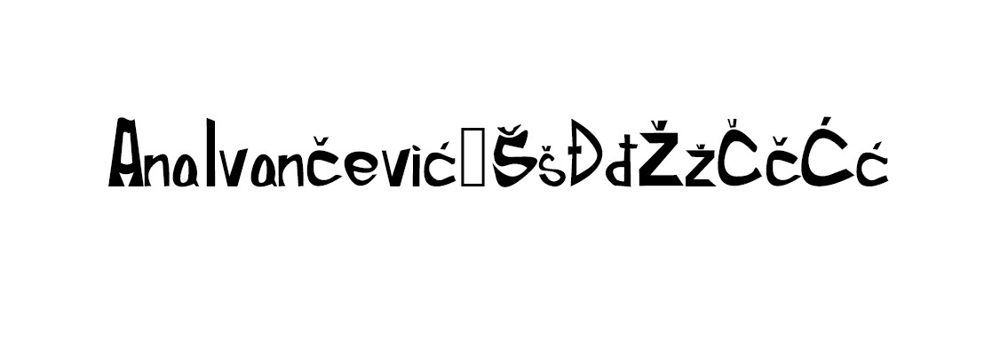
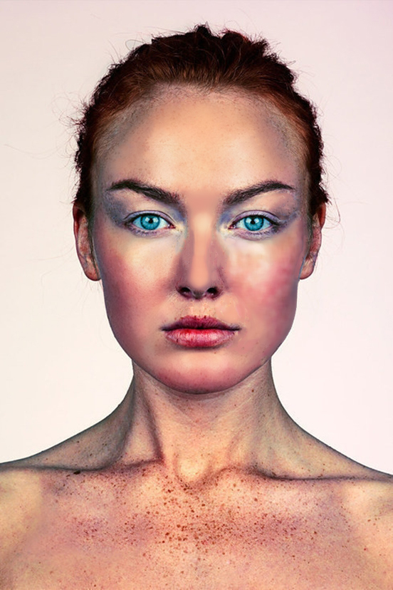
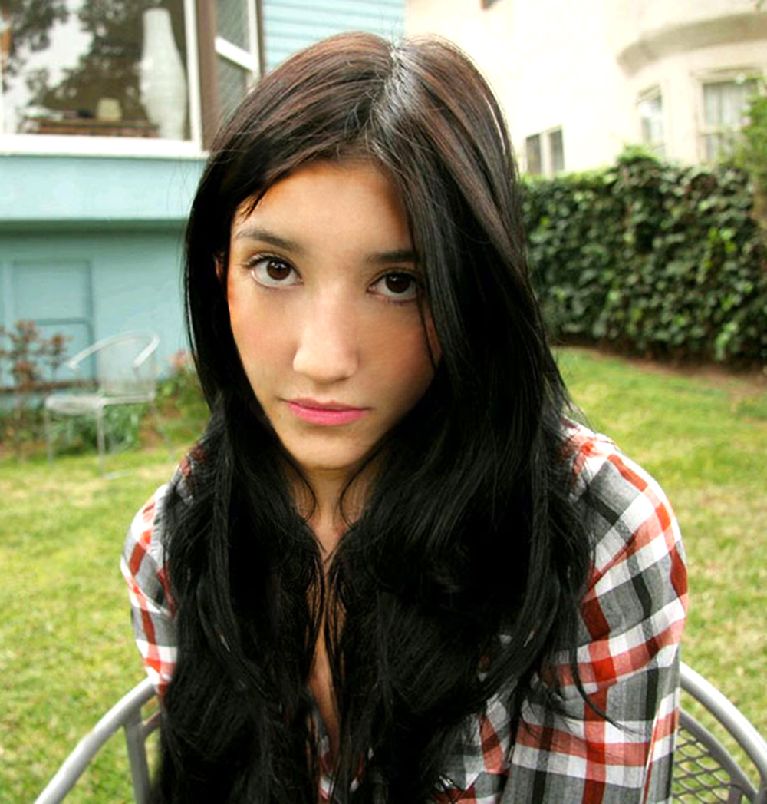
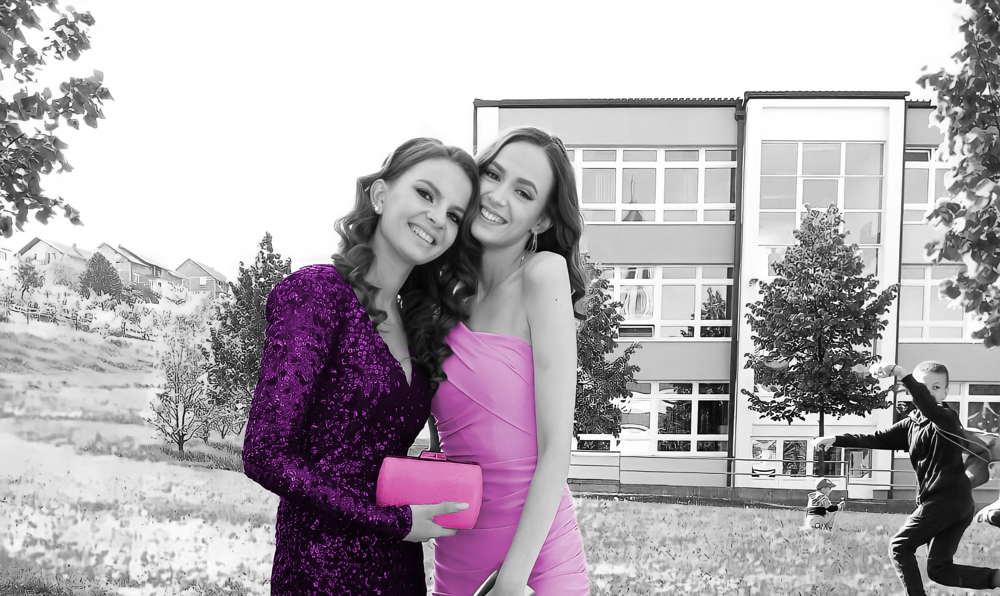
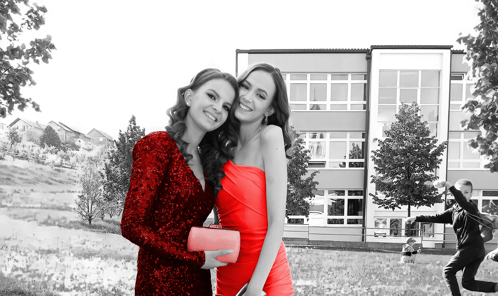
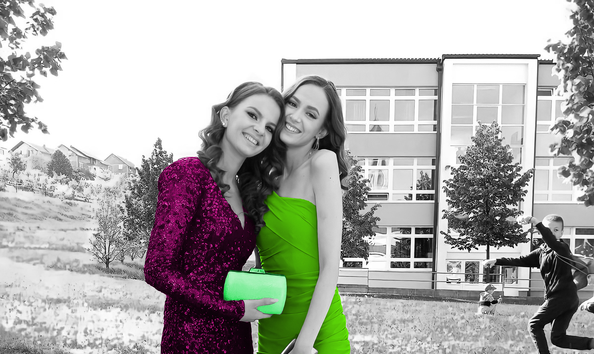
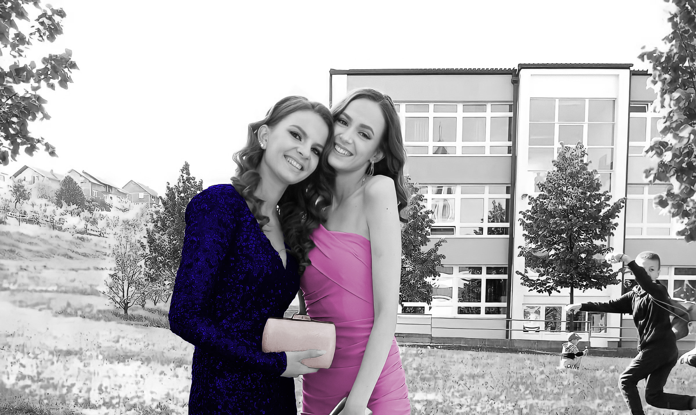
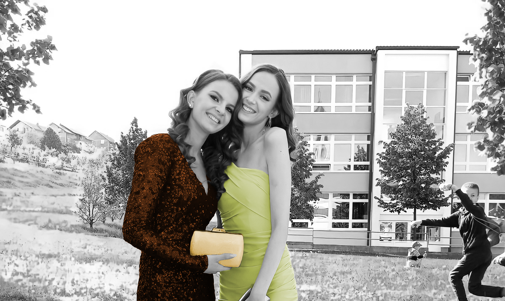
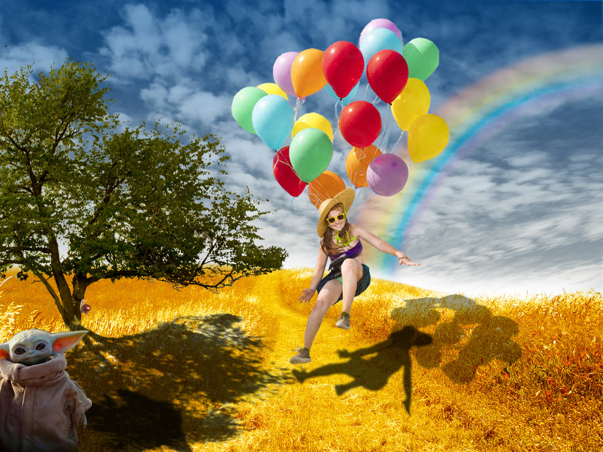

U prvoj vježbi smo radili na vlastitom fontu.
U drugoj vježbi smo radili na vektorkoj grafici. Koristili smo Bezierovu krivulju, koja je parametarska krivulja definirana sa 4 točke i predstavlja temelj današnje vektorske grafike.
Vježba 2U trećoj vježbi smo također obrađivali temu vektorske grafike.
Vježba 3U četvrtoj vježbi se obrađuje tema izrade složenih objekata koji se sastoje od više staza metodama spajanja ili oduzimanja oblika.
Vježba 4U petoj vježbi upoznali smo se s pojmom retuširanja.
 U šestoj vježbi prošli smo kroz tehnike neinvazivnog koloriranja slike koje se može primijeniti na crno-bijele slike ili slike u boji kojima želimo promijeniti nijansu određenih područja
    U sedmoj vježbi prolazimo kroz različite tehnike selektiranja jednostavnih i složenih oblika.
U osmoj vježbi bavili smo se osnovama obrade video materijala i uvođenjem multimedije u video projekt.

U devetoj vježbi teme su bile rezanje i spajanje video isječaka iz više izvora,video efekti.
U desetoj vježbi naučili smo kako napraviti web sadržaj.
Deseta vježba